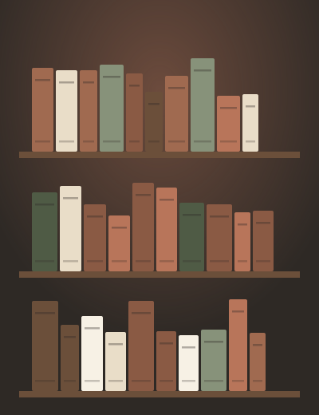

Verde Raíz
Inicio
Registro
Quiénes somos
Catálogo
Carrito (
0
)
Búsqueda

Bienvenido a Verde Raíz
Plantas, macetas y accesorios para llenar de verde tu casa.
Ver catálogo
Categorías destacadas
Plantas de interior
Suculentas y cactus
Macetas de barro
Tierra y abonos
Herramientas de jardín